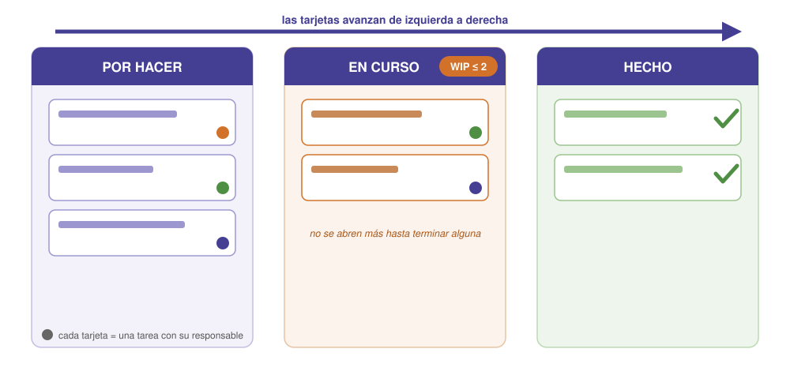
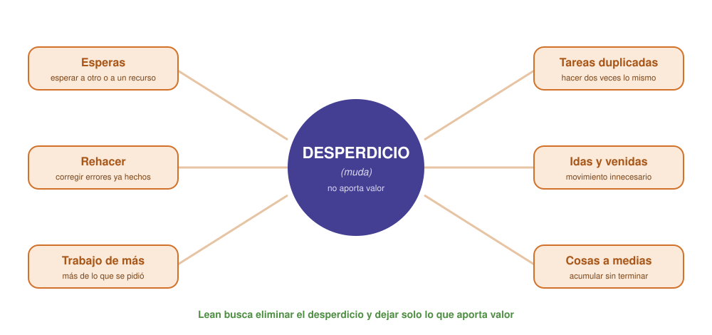
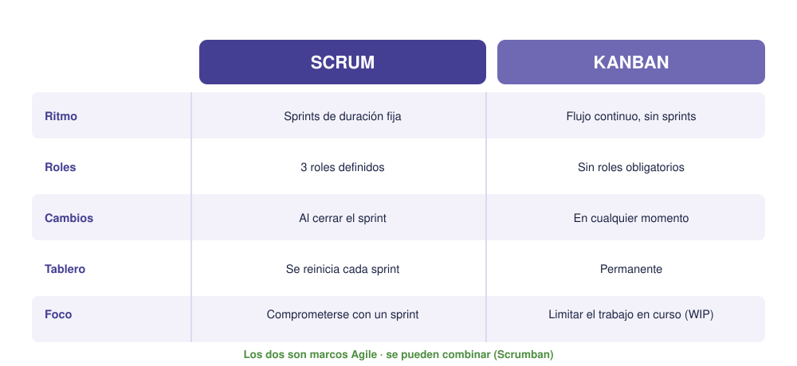

Contenido
Sesión 8
En la sesión anterior viste Scrum, que organiza el trabajo en sprints. Ahora veremos otras dos ideas de la familia Agile que se usan muchísimo y que encajan muy bien con cualquier proyecto: Kanban, para visualizar y controlar el flujo de trabajo, y Lean, una filosofía para eliminar lo que no aporta valor.
Kanban: visualizar el flujo de trabajo
Kanban (palabra japonesa que significa “tarjeta visual”) nació en las fábricas de Toyota para controlar el flujo de producción, y hoy se usa en todo tipo de proyectos. Su idea es simple: el trabajo se representa con tarjetas que avanzan por un tablero dividido en columnas según el estado de cada tarea. La versión más sencilla tiene tres columnas:
- Por hacer: tareas pendientes (vienen del backlog).
- En curso: lo que se está haciendo ahora.
- Hecho: lo terminado… pero, ¿terminado según quién? Aquí es donde se usa la Definición de Terminado que acordasteis en la S6: una tarjeta solo cruza a «Hecho» si cumple sus condiciones.
Reglas básicas:
- Cada tarjeta es una tarea con un responsable.
- Las tarjetas avanzan de izquierda a derecha según progresan.
- Se limita el número de tarjetas en la columna “En curso” (es el límite WIP, del inglés Work In Progress, “trabajo en curso”).

El límite WIP y el sistema “pull”
¿Por qué limitar el trabajo “en curso”? Porque empezar muchas cosas a la vez no hace que se terminen antes: al contrario, todo queda a medias, se cambia constantemente de tarea y nada llega a “Hecho”. Al fijar un límite WIP (por ejemplo, máximo 2 tarjetas en curso), el equipo se obliga a terminar lo empezado antes de abrir algo nuevo.
Esto convierte a Kanban en un sistema “pull” (de tirar): en lugar de empujar todo el trabajo al equipo de golpe, cada persona tira de una tarea nueva solo cuando se ha liberado de la anterior. El tablero hace visible, de un vistazo, quién hace qué y, sobre todo, dónde se atasca el trabajo (un cuello de botella): si una columna se llena de tarjetas, ahí hay un problema que resolver.
Pruébalo tú
Suena raro que trabajar en menos cosas a la vez haga terminar antes. Abajo tienes dos equipos con las mismas seis tarjetas y el mismo esfuerzo diario: uno sin límite y otro con límite 2. Avanza día a día y mira la columna «Hecho».
Con límite WIP y sin él
Los dos equipos acaban el mismo día: el trabajo total no cambia. Lo que cambia es cuándo se termina cada cosa — sin límite no hay nada acabado hasta el final, y con límite hay valor entregado desde el primer día. Es un modelo simplificado, pero el efecto es real.
Lean: eliminar el desperdicio
Lean (en inglés, “magro, sin grasa”; no confundir con Agile) es una filosofía de gestión, también nacida en Toyota, que busca entregar el máximo valor con el mínimo desperdicio. Se apoya en cinco principios:
- Valor: definir qué es valioso desde el punto de vista del usuario (no del que fabrica).
- Flujo de valor: identificar todos los pasos necesarios para entregar ese valor.
- Flujo: lograr que el trabajo avance sin atascos ni esperas.
- Pull (tirar): producir según la demanda real, no acumular de más.
- Perfección: mejorar continuamente.
Los desperdicios (muda)
El corazón de Lean es perseguir el desperdicio (en japonés, muda): todo lo que consume tiempo o recursos sin aportar valor al usuario. Reconocerlo es el primer paso para eliminarlo. En la industria se catalogan siete tipos clásicos de muda; estos son los que más se parecen a lo que pasa en un trabajo de clase:

Mejora continua (kaizen)
Lean no busca un gran cambio de golpe, sino pequeños ajustes constantes: es lo que en japonés se llama kaizen. Cada vez que el equipo detecta un desperdicio y lo corrige, el trabajo fluye un poco mejor. (Es la misma idea que la retrospectiva de Scrum.)
Kanban + Lean juntos
El tablero Kanban es, en la práctica, una herramienta Lean: al limitar el trabajo en curso y hacer visible dónde se atasca, ayuda a eliminar esperas y a mantener el flujo. Por eso se usan casi siempre de la mano.
Scrum, Kanban… ¿cuál uso?
No son rivales: los dos son marcos Agile y comparten la misma idea de entregar valor poco a poco y mejorar continuamente. Se diferencian en cómo organizan el trabajo.

En la práctica: Scrum encaja cuando conviene trabajar por entregas planificadas con un equipo estable; Kanban encaja cuando el trabajo llega de forma continua o cambia mucho, y se quiere flexibilidad. Y se pueden combinar (a esa mezcla se le llama Scrumban): sprints de Scrum con un tablero y límites WIP de Kanban.
Ejemplo aplicado
Recuperemos el equipo de la app del huerto escolar de la sesión anterior. Montan un tablero Kanban con las columnas Por hacer, En curso y Hecho, y pasan las historias de su backlog a tarjetas. Fijan un límite WIP de 2: como son cuatro personas, nunca tienen más de dos tareas a medias a la vez.
A los pocos días notan que la columna En curso se atasca siempre en “probar la app”: es un cuello de botella. Aplicando Lean, descubren el desperdicio: estaban rehaciendo la prueba una y otra vez porque no se ponían de acuerdo en cómo probarla. Acuerdan una forma única de probar (un pequeño kaizen) y el flujo se desatasca. El tablero les ha hecho ver el problema y Lean les ha ayudado a eliminarlo.
Tarea del proyecto
Montad vuestro tablero Kanban
TRABAJO EN EQUIPO una sola entrega por equipo
Pasad las tareas de vuestro backlog (S6) y las historias de usuario (S7) a tarjetas y montad el tablero Kanban del equipo en diagrams.net (online, sin instalar nada y sin cuenta: es la misma herramienta con la que dibujasteis la red PERT). Cread tres columnas (Por hacer, En curso, Hecho) y una tarjeta por tarea. Fijad un límite WIP para la columna “En curso” y repartid las primeras tarjetas con su responsable. Exportad el tablero a PNG y añadid la imagen a la plantilla del plan de proyecto (enlace en la portada).
Ejercicios
Recuerda
TRABAJO INDIVIDUAL cada persona entrega el suyo
Resuelve primero en el cuaderno y luego pasa tus respuestas a tu copia de la plantilla en Drive (la que creaste desde la portada). Al terminar la unidad, descarga la plantilla en PDF (Archivo → Descargar → Documento PDF) y súbelo a la tarea Ejercicios de la unidad de Moodle. La tarea está abierta desde la primera sesión, pero no pulses «Entregar» hasta la última: es un solo documento con los ejercicios de las nueve.
- Pon un ejemplo de “desperdicio” (en sentido Lean) que hayáis tenido en un trabajo de clase, e indica de qué tipo es.
- ¿Qué problema crees que evita limitar las tarjetas “en curso” (límite WIP)?
- Explica con tus palabras qué es un sistema “pull” (tirar del trabajo) y en qué se diferencia de empujar todas las tareas al equipo a la vez.
- Indica una diferencia y una semejanza entre Scrum y Kanban, y di en qué situación usarías cada uno.
- Diseña las columnas de un tablero Kanban adaptado a vuestro proyecto (pueden ser más de tres) y fija un límite WIP para la columna “En curso”.
Verdadero o falso
Cinco ideas sobre el flujo de trabajo. Algunas son justo lo contrario de lo que parece.
00:00: